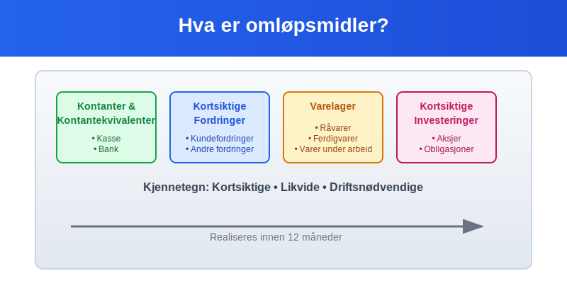
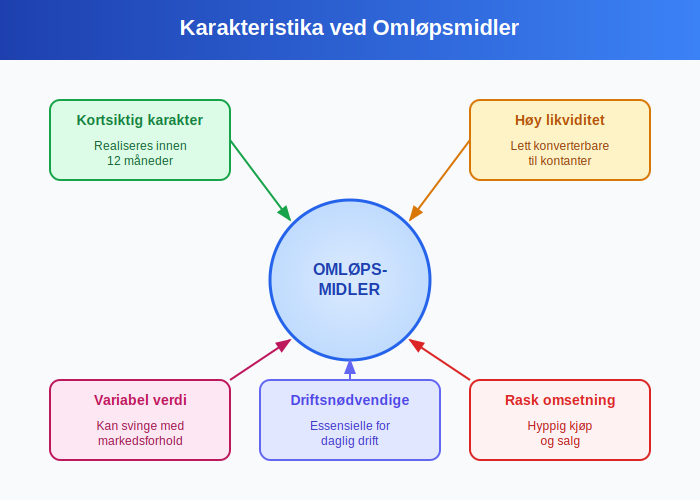
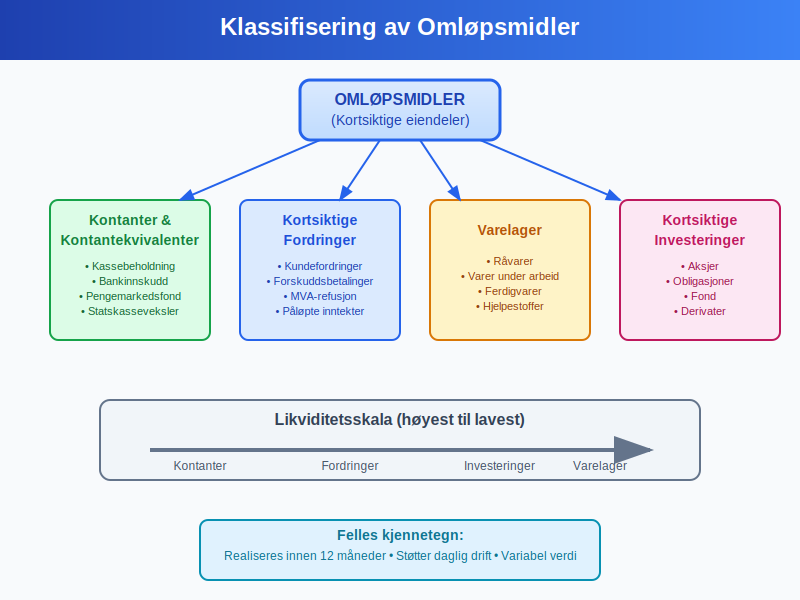
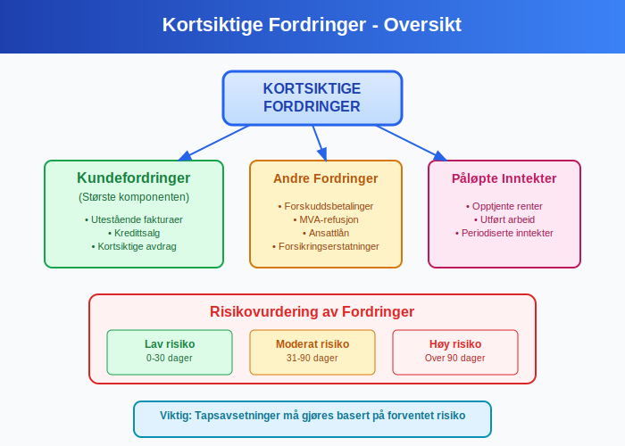
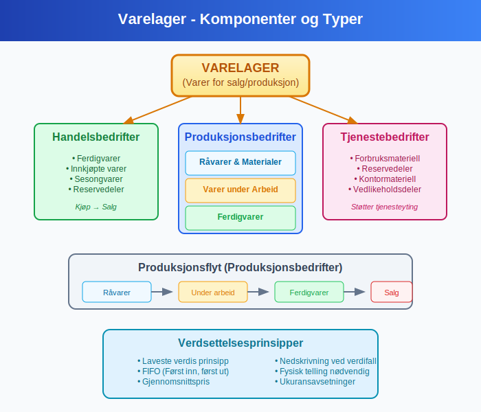
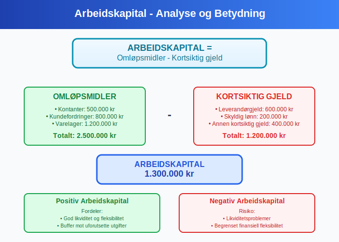
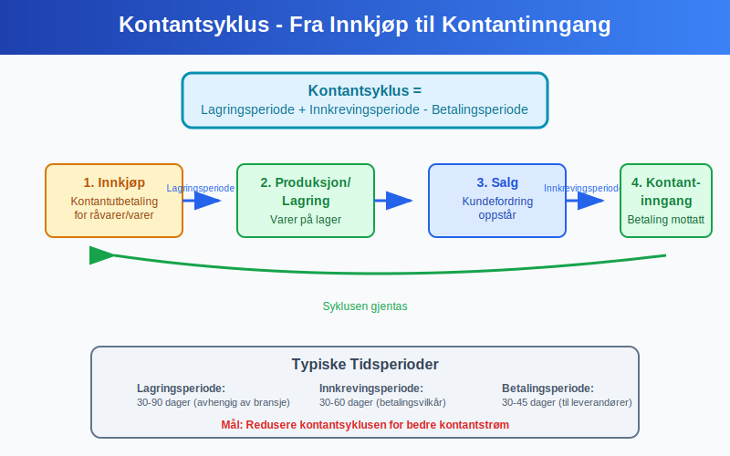
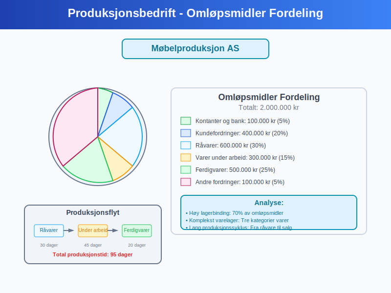

Omløpsmidler er kortsiktige eiendeler som en bedrift forventer å konvertere til kontanter, selge eller forbruke innen ett år eller den normale driftssyklusen. Disse eiendelene er avgjørende for bedriftens likviditet og daglige drift. Omløpsmidler skiller seg fra anleggsmidler ved at de er ment for kortsiktig bruk og rask konvertering til kontanter.
Omløpsmidler er en kategori av driftsmidler.

Seksjon 1: Definisjon og Karakteristika
1.1 Grunnleggende Definisjon
Omløpsmidler defineres som eiendeler som:
- Holdes for salg i den ordinære forretningsdriften
- Holdes for produksjon eller levering av varer og tjenester
- Holdes for handel eller kortsiktige investeringer
- Forventes realisert innen ett år eller den normale driftssyklusen
- Inkluderer kontanter og kontantekvivalenter – se likvide midler.
1.2 Kjennetegn ved Omløpsmidler

Omløpsmidler har flere distinkte egenskaper:
- Kortsiktig karakter: Realiseres innen 12 måneder
- Høy likviditet: Lett konverterbare til kontanter
- Variabel verdi: Kan svinge med markedsforhold
- Driftsnødvendige: Essensielle for daglig drift
- Rask omsetning: Hyppig kjøp og salg
Seksjon 2: Klassifisering av Omløpsmidler
Omløpsmidler klassifiseres i fire hovedkategorier basert på deres likviditet og funksjon:

2.1 Kontanter og Kontantekvivalenter
Likvide midler består av kontanter og kontantekvivalenter og er de mest likvide omløpsmidlene. De inkluderer kassebeholdning og bankinnskudd.
Kontanter
- Kassebeholdning: Fysiske kontanter i kassen
- Småkasse: Kontanter for mindre utgifter
- Vekslepenger: Kontanter for daglig drift
Bankinnskudd
- Brukskonti: Daglige driftskonti
- Sparekonti: Kortsiktige spareinnskudd
- Termininnskudd: Innskudd med kort bindingstid (under 1 år)
Kontantekvivalenter
- Pengemarkedsfond: Høylikvide investeringer
- Statskasseveksler: Kortsiktige statspapirer
- Banksertifikater: Kortsiktige bankinstrumenter
2.2 Kortsiktige Fordringer
Kortsiktige fordringer representerer penger som andre skylder bedriften og som forventes innbetalt innen ett år.

Kundefordringer
Kundefordringer er den største komponenten av kortsiktige fordringer:
- Utestående fakturaer: Solgte varer/tjenester ikke betalt
- Kredittsalg: Salg på kreditt til kunder
- Avdrag: Kortsiktige avdrag på langsiktige salg
Andre Fordringer
- Forskuddsbetalinger: Betalinger til leverandører på forhånd
- Mva-refusjon: Utestående merverdiavgift fra staten
- Ansattlån: Kortsiktige lån til ansatte
- Forsikringserstatninger: Utestående erstatninger
Påløpte Inntekter
- Opptjente renter: Renter ikke mottatt ennå
- Utført arbeid: Arbeid utført men ikke fakturert
- Periodiserte inntekter: Inntekter som tilhører perioden
2.3 Varelager
Varelager representerer varer som holdes for salg eller produksjon.

Handelsbedrifter
- Ferdigvarer: Varer klare for salg
- Innkjøpte varer: Varer kjøpt for videresalg gjennom varekjøp
- Sesongvarer: Varer med sesongmessig salg
Produksjonsbedrifter
- Råvarer: Materialer for produksjon
- Varer under arbeid: Halvferdige produkter
- Ferdigvarer: Fullførte produkter klare for salg
- Hjelpestoffer: Materialer som støtter produksjonen
Tjenestebedrifter
- Forbruksmateriell: Materialer brukt i tjenesteyting
- Reservedeler: Deler for vedlikehold og reparasjon
- Kontormateriell: Papir, skrivesaker, etc.
2.4 Kortsiktige Investeringer
Kortsiktige investeringer er finansielle instrumenter som holdes for kortsiktig gevinst.
Verdipapirer
- Aksjer: Børsnoterte aksjer for kortsiktig handel
- Obligasjoner: Kortsiktige rentepapirer
- Fond: Aksjefond og rentefond
Derivater
- Opsjoner: Rettigheter til kjøp/salg
- Terminer: Avtaler om fremtidig levering
- Valutakontrakter: Sikring mot valutarisiko
Seksjon 3: Verdsettelse og Regnskapsføring
3.1 Verdsettelsesprinsipper
Omløpsmidler verdsettes etter laveste verdis prinsipp:

| Omløpsmiddeltype | Verdsettelsesgrunnlag | Eksempel |
|---|---|---|
| Kontanter | Pålydende verdi | 100.000 kr = 100.000 kr |
| Kundefordringer | Pålydende minus tapsavsetning | 50.000 kr - 2.500 kr = 47.500 kr |
| Varelager | Laveste av kost og netto salgspris | Kost 80.000 kr, salg 75.000 kr = 75.000 kr |
| Kortsiktige investeringer | Laveste av kost og markedsverdi | Kost 60.000 kr, marked 55.000 kr = 55.000 kr |
3.2 Tapsavsetninger
Tapsavsetninger må gjøres for forventede tap:
Kundefordringer
- Individuelle vurderinger: Spesifikke kunder med betalingsproblemer
- Porteføljevurderinger: Statistiske tap basert på historikk
- Aldersanalyse: Økt tapsrisiko med økende alder
Eksempel tapsavsetning:
| Aldersgruppe | Beløp | Tapsprosent | Tapsavsetning |
|---|---|---|---|
| 0-30 dager | 500.000 kr | 0,5% | 2.500 kr |
| 31-60 dager | 200.000 kr | 2% | 4.000 kr |
| 61-90 dager | 100.000 kr | 5% | 5.000 kr |
| Over 90 dager | 50.000 kr | 20% | 10.000 kr |
| Totalt | 850.000 kr | 2,5% | 21.500 kr |
Varelager
- Ukurans: Varer som ikke kan selges
- Verdifall: Markedspris under kostpris
- Skade: Fysisk skadede varer
3.3 Periodisering
Periodisering sikrer at omløpsmidler føres i riktig periode:
- Påløpte inntekter: Inntekter opptjent men ikke mottatt
- Forskuddsbetalte kostnader: Kostnader betalt på forhånd
- Periodeavgrensninger: Korrekt fordeling mellom perioder
Seksjon 4: Likviditetsanalyse
4.1 Likviditetsgrader
Likviditetsgrader måler bedriftens evne til å dekke kortsiktige forpliktelser:

Likviditetsgrad 1 (Løpende likviditet)
Likviditetsgrad 1 = Omløpsmidler ÷ Kortsiktig gjeld
- Over 2,0: Meget god likviditet
- 1,5-2,0: God likviditet
- 1,0-1,5: Akseptabel likviditet
- Under 1,0: Svak likviditet
Likviditetsgrad 2 (Rask likviditet)
Likviditetsgrad 2 = (Omløpsmidler - Varelager) ÷ Kortsiktig gjeld
- Over 1,0: God rask likviditet
- 0,7-1,0: Akseptabel rask likviditet
- Under 0,7: Svak rask likviditet
Kontantgrad
Kontantgrad = (Kontanter + Kortsiktige investeringer) ÷ Kortsiktig gjeld
4.2 Arbeidskapital
Arbeidskapital er forskjellen mellom omløpsmidler og kortsiktig gjeld:
Arbeidskapital = Omløpsmidler - Kortsiktig gjeld

Positiv Arbeidskapital
- Fordeler: God likviditet, fleksibilitet
- Ulemper: Kapital bundet opp, lavere avkastning
Negativ Arbeidskapital
- Fordeler: Effektiv kapitalbruk
- Ulemper: Likviditetsrisiko, begrenset fleksibilitet
4.3 Omløpshastighet
Omløpshastighet måler hvor raskt omløpsmidler konverteres til kontanter:
Kundefordringer
Omløpshastighet kundefordringer = Kreditsalg ÷ Gjennomsnittlige kundefordringer
Innkrevingsperiode = 365 dager ÷ Omløpshastighet
Varelager
Lageromløpshastighet = Kostpris solgte varer ÷ Gjennomsnittlig varelager
Lagringsperiode = 365 dager ÷ Lageromløpshastighet
Seksjon 5: Kontantstrømstyring
5.1 Kontantsyklus
Kontantsyklusen viser tiden fra kontantutbetaling til kontantinnbetaling:

Kontantsyklus = Lagringsperiode + Innkrevingsperiode - Betalingsperiode
5.2 Optimalisering av Omløpsmidler
Kontantbeholdning
- Minimumsbeholdning: Dekke daglige behov
- Maksimumsbeholdning: Unngå overflødig likviditet
- Kontantbudsjett: Planlegge kontantbehov
Kundefordringer
- Kredittvilkår: Balansere salg og risiko
- Kredittvurdering: Vurdere kunders betalingsevne
- Inkasso: Effektiv oppfølging av forfalte fordringer
Varelager
- Just-in-time: Redusere lagerbinding
- ABC-analyse: Prioritere viktige varer
- Sikkerhetslagre: Balansere service og kostnader
Seksjon 6: Praktiske Eksempler
6.1 Handelsbedrift Eksempel
Norskebutikker AS har følgende omløpsmidler:
| Omløpsmiddeltype | Beløp (NOK) | Andel |
|---|---|---|
| Kontanter og bank | 150.000 | 10% |
| Kundefordringer | 300.000 | 20% |
| Varelager | 900.000 | 60% |
| Forskuddsbetalinger | 150.000 | 10% |
| Totalt | 1.500.000 | 100% |
Analyse:
- Høy lagerandel: Typisk for handelsbedrift
- Moderate kundefordringer: Mye kontantsalg
- Lav kontantbeholdning: Effektiv kontantstyring
6.2 Tjenestebedrift Eksempel
Konsulentpartner AS har følgende omløpsmidler:
| Omløpsmiddeltype | Beløp (NOK) | Andel |
|---|---|---|
| Kontanter og bank | 200.000 | 25% |
| Kundefordringer | 500.000 | 62,5% |
| Påløpte inntekter | 80.000 | 10% |
| Forskuddsbetalinger | 20.000 | 2,5% |
| Totalt | 800.000 | 100% |
Analyse:
- Høye kundefordringer: Typisk for tjenestebedrift
- Ingen varelager: Tjenester har ikke fysiske varer
- Påløpte inntekter: Arbeid utført men ikke fakturert
6.3 Produksjonsbedrift Eksempel
Møbelproduksjon AS har følgende omløpsmidler:

| Omløpsmiddeltype | Beløp (NOK) | Andel |
|---|---|---|
| Kontanter og bank | 100.000 | 5% |
| Kundefordringer | 400.000 | 20% |
| Råvarer | 600.000 | 30% |
| Varer under arbeid | 300.000 | 15% |
| Ferdigvarer | 500.000 | 25% |
| Andre fordringer | 100.000 | 5% |
| Totalt | 2.000.000 | 100% |
Analyse:
- Komplekst varelager: Tre kategorier varer
- Høy lagerbinding: 70% av omløpsmidler
- Produksjonssyklus: Lang tid fra råvare til salg
Seksjon 7: Regnskapsføring og Dokumentasjon
7.1 Bilagsføring
Dokumentasjon av omløpsmidler krever systematisk bilagsføring:
Kontanter
- Kasseoppgjør: Daglig telling og avstemming
- Bankutskrifter: Månedlig bankavstemming
- Kvitteringer: Alle kontanttransaksjoner
Kundefordringer
- Fakturaer: Grunnlag for fordringer
- Betalingsbekreftelser: Dokumentasjon av innbetalinger
- Kreditnotaer: Reduksjon av fordringer
Varelager
- Innkjøpsfakturaer: Dokumentasjon av anskaffelser
- Lagerrapporter: Fysisk telling og verdsettelse
- Produksjonsrapporter: Kostnader i produksjon
7.2 Periodeavgrensninger
Korrekt periodisering sikrer at omløpsmidler føres i riktig periode:
- Forskuddsbetalte kostnader: Kostnader som gjelder fremtidige perioder
- Påløpte inntekter: Inntekter opptjent men ikke mottatt
- Periodeavgrensninger: Fordeling mellom regnskapsperioder
7.3 Internkontroll
Internkontroll av omløpsmidler omfatter:
Kontanter
- Funksjonsadskillelse: Separate personer for håndtering og registrering
- Daglige oppgjør: Kontroll av kassebeholdning
- Bankavstemming: Månedlig avstemming av bankkonti
Kundefordringer
- Kredittkontroll: Vurdering før kredittgivning
- Aldersanalyse: Oppfølging av forfalte fordringer
- Tapsavsetninger: Regelmessig vurdering av tap
Varelager
- Fysisk telling: Regelmessig kontroll av beholdning
- Tilgangskontroll: Begrenset adgang til lager
- Verdivurdering: Korrekt prissetting av varer
Seksjon 8: Skattemessige Forhold
8.1 Skattemessig Behandling
Skattemessig verdsettelse av omløpsmidler følger spesielle regler:
Varelager
- FIFO-prinsippet: Først inn, først ut
- Gjennomsnittspris: Vektet gjennomsnitt
- Laveste verdis prinsipp: Kost eller markedsverdi
Kundefordringer
- Realisasjonsprinsippet: Tap fradragsføres når det er konstatert
- Tapsavsetninger: Ikke fradragsberettiget før tap er realisert
8.2 Merverdiavgift
Moms/MVA påvirker omløpsmidler:
- Inngående MVA: Kan trekkes fra på kjøp
- Utgående MVA: Påløper ved salg
- MVA-oppgjør: Påvirker kontantstrøm
Konklusjon
Omløpsmidler er fundamentale for enhver bedrifts likviditet og daglige drift. Effektiv styring av omløpsmidler krever:
- Systematisk klassifisering av alle kortsiktige eiendeler
- Korrekt verdsettelse etter regnskapsprinsipper
- Løpende likviditetsanalyse for å sikre betalingsevne
- Optimalisering av kontantsyklus og arbeidskapital
- God internkontroll for å minimere risiko
Ved å forstå og aktivt styre omløpsmidlene kan bedrifter sikre stabil likviditet, redusere finansieringskostnader og forbedre den totale lønnsomheten. Dette krever kontinuerlig oppmerksomhet og systematisk tilnærming til alle komponenter av omløpsmidlene.
For mer informasjon om relaterte emner, se våre artikler om anleggsmidler, arbeidskapital og likviditetsstyring.